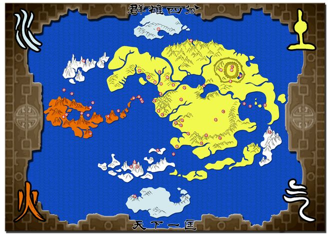
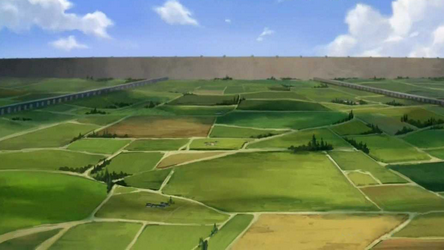
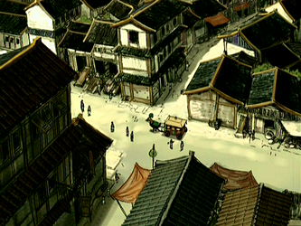
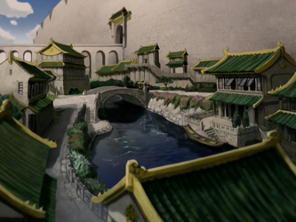
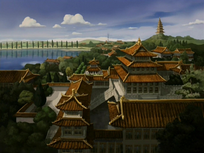
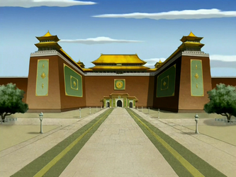

Ir a la parte de abajo
Ubicación de Ba Sing Se
Ba Sing Se es la capital del reino de la tierra. Se encuentra localizada en el sector nororiental del continente, abarcando casi toda esta sección del mismo. La ciudad se encuentra rodeada por 2 gigantezcas murallas que solo pueden ser manipuladas por maestros de la tierra control (Personas capaces de modelar a su antojo el elemento tierra dentro de la serie). Entre la muralla exterior y la interior, se encuentran inmensos campos silvestres y de cultivo. La ciudad propiamente dicha, se encuentra dentro de los muros interiores, donde a su vez es sectorizada y su población dividida en 3 zonas.
Sector intermuros
El sector intermuros va desde la muralla exterior hasta la interior donde comienza realmente la ciudad. En este sector podemos encontrar los campos de cultivo que permiten a la ciudad autosustentarse, y en caso de tener un asedio, poder resistir sin problemas, aquí también se encuentra el zoológico de Ba Sing Se.
Sector bajo
El Sector Bajo es el hogar de los pobres de las clases sociales más bajas de Ba Sing Se, y concentra a la mayoría de su población. Se trata de recién llegados a la ciudad, incluida su multitud de refugiados y "personas que trabajan con sus manos", como los obreros y artesanos.
Sector medio
El Sector Medio de Ba Sing Se contiene a la gente de clase media de la ciudad. Dentro de este sector existe una gran variedad de tiendas y restaurantes, así como el distrito financiero y el Ayuntamiento (el edificio más antiguo en el sector medio). La Universidad de Ba Sing Se, un gran almacén de conocimientos y una clave de la ciudad, se encuentra también en este ámbito.
Sector alto
Como el más rico de los tres sectores, el Sector Alto de la ciudad contiene a la clase alta de la población, así como militares y funcionarios gubernamentales. Los más importantes ciudadanos de la ciudad residen aquí, protegidos contra la actividad delictiva por la presencia de los Dai Li. El Palacio Real está situado en el centro de este sector, dentro de sus propios muros.
Palacio real
El Palacio real de Ba Sing aloja al rey del reino tierra. Es un palacio gigante con su estilo basado en la ciudad prohibida de Pekín.
